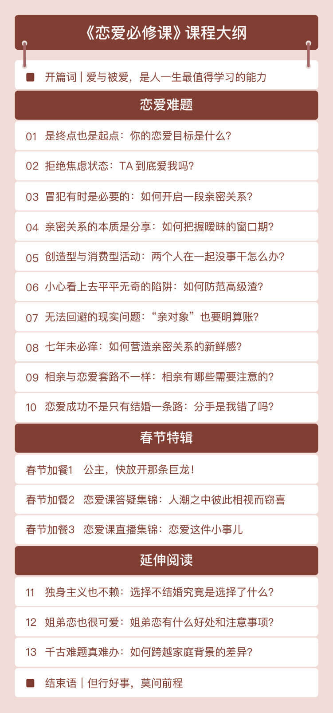

- 00 开篇词 爱与被爱，是人一生最值得学习的能力.md
- 01 是终点也是起点：你的恋爱目标是什么？.md
- 02 拒绝焦虑状态：TA到底爱我吗？.md
- 03｜冒犯有时是必要的：如何开启一段亲密关系？.md
- 04 亲密关系的本质是分享：如何把握暧昧的窗口期？.md
- 05 创造型与消费型活动：两个人在一起没事干怎么办？.md
- 06 小心看上去平平无奇的陷阱：如何防范高级渣？.md
- 07 无法回避的现实问题：“亲对象”也要明算账？.md
- 08 七年未必痒：如何营造亲密关系的新鲜感？.md
- 09 相亲与恋爱套路不一样：相亲有哪些需要注意的？.md
- 10 恋爱成功不是只有结婚一条路：分手是我错了吗？.md
- 11 独身主义也不赖：选择不结婚究竟是选择了什么？.md
- 12 姐弟恋也很可爱：姐弟恋有什么好处和注意事项？.md
- 13 千古难题真难办：如何跨越家庭背景的差异？.md
- 春节加餐1 公主，快放开那只巨龙！.md
- 春节加餐2 恋爱课答疑集锦：人潮之中彼此相视而窃喜.md
- 春节加餐3 恋爱课直播集锦：恋爱这件小事儿.md
- 结束语 但行好事，莫问前程.md
00 开篇词 爱与被爱，是人一生最值得学习的能力
从蹒跚学步到牙牙学语，从徒手开根号到闭眼背英文，我们一直在孜孜不倦地学习获取新的技能。然而学校从来没有开设一门课，教你如何去爱一个人，或者怎样享受被一个人爱。
甚至教导主任们视恋爱如洪水猛兽，一发现爱的苗头就要赶尽杀绝、斩草除根。
以至于当你遇到那个让你魂牵梦绕的人时，当你父母开始着急忙慌催婚时，你只能像一个从未训练过的士兵，手无寸铁地走向战场。更有甚者，有人相信了损友们不知道从哪个网络小说中学到的恋爱宝典，简直就像拿着贴了双面胶的炸药包上战场，结果可想而知。
谈恋爱看似很容易，只要不太挑，总能搂到人跟你组 cp。两个人眼一闭一睁，恋爱就算谈上了。谈恋爱又很难，找人难、追求难、维系关系难、分手也很难，相见时难别亦难。
这么多年，我看过许多以幸福模样开局，却草草收场的恋情，也见过很多在恋情中相互折磨的恋人。不是不爱，只是不懂如何去爱。
你是不是也曾经为了一个人，茶饭不思辗转反侧，费尽心力也只是友情以上恋爱未满；
你是不是也曾经在某个深夜，骤然醒来回想起某个人如同月光皎洁，却遗憾就此错过；
你是不是也突然醒悟，当初那句话若是换个说法，现在那个人是否还会留在身边。
于是，我们总在一遍遍地感叹，感叹命运为何如此残酷，总是让我们在错的时间遇到对的人，让我们一次次地在 KTV 大声唱着，“后来，当我学会如何去爱，你却已经不在。”
打住，不要伤春悲秋，这还上升不到命运的高度。其实，恋爱就是个技能问题。
恋爱，是一项技能
但是，从理论上来说，恋爱这个技能，你也可以不学。
因为在一段长时间、近距离、高频次接触的、密切的亲密关系中，两个人一切的性格缺陷都会被放大。所以理论上，如果你是性格特别圆融的人，根本没有缺陷，那自然不用学，就像练了九阳神功的张无忌，什么武功都不用练，一路平 A 别人也破不了防。
不过一般历史上，我们称这种没有缺陷的人为完人、圣人，比如孔子、王阳明。这是最治本的路子，但也是普通人最难以企及的路子。
对我们普通人来说，学习这项技能就显得性价比非常高。恋爱技能就像太极剑，是让你掩盖破绽、化解矛盾，和自己，也和对方的缺陷达成和解的一种能力。
培养爱的能力，这里既涉及知识，也包括方法，最终上升到能力。
比如，我们经常聊防渣的话题，如果你连渣男渣女是什么样都不知道，以为只要女孩前凸后翘、性感妩媚、长袖善舞就是渣女，那自然防不住。识渣是防渣的第一步，这类知识不学自然不会，如果靠自己在恋爱中学习，那代价往往是撞得头破血流。
所以，学习这样一门课，往小了说，避开一个雷，能为你节约多少时间精力；往大了说，北大包丽、WePhone 苏享茂，不就是“死于”渣男渣女之手，学会这课还能救命。
再比如，我们还会聊“暧昧”的话题，就要讲如何利用暧昧期推进关系，讲亲密关系的六层交互理论。这种方法不学，你也有可能会不自觉地用，就好像很多人没上过游泳课也会游泳，没上过羽毛球课也会打羽毛球一样。但是成系统成体系学习过的人，稍加训练就比自己领悟的野路子强。
知识和方法，都是可复制、可传授的，所以恋爱能力是能够习得的。当然，我们在恋爱课堂里谈不成恋爱，还需要你在掌握了知识和方法，构建了正确的恋爱框架后，在生活中不断地积极实践，才能真正将其内化为自己的能力。
但是，恋爱这种能力，是一种需要长期学习和培训的能力。
它不像 21 天就能玩转的 Python 或者每天 5 分钟就能轻松记下的单词，“爱”这个能力没法突击。但是，越早学习，你就越不容易错过天命之人，而留下不容挽回的遗憾。
你也发现了，这个专栏叫《恋爱必修课》，不是想鼓吹人生要以恋爱为中心，而是想告诉你，爱与被爱，是人一生最值得学习的能力。其他技能，最多也只是支撑你事业发展的一条腿，爱的能力却是通向你爱情和家庭唯一的一张船票，现在这张船票的票价仅仅是两杯星巴克的价钱。
恋爱，是自我成长
既然讲恋爱课，要讲什么呢？
有人问过我，要不要学习和了解一下最近大火的 PUA、茶艺学等学问；还有人问我，网上的恋爱套路，到底有几分可以效仿。我理解这种心态，在这个普通人都会几句土味情话的时代，好像学了就有可能找到对象，不学就要落后，落后就要孤单。
可是，为什么套路化和模板化的东西这么流行？背后的根本原因就是，我们害怕没人爱，害怕自己是单身。人口焦虑还未结束，信息焦虑的脚步就跟上了，随之而来的就是“爱情焦虑”。
别急，先停止你的焦虑。我们先来想一想，恋爱到底是什么？
在我做情感咨询的这么多年，问我“为什么和怎么办”的人很多，问我“是什么”的人还没碰见过。偏偏这个问题又极度重要，对“是什么”理解得越深刻，对“为什么”分析的原因才能越精确，“怎么办”的方法才能越有效。
现在搜索引擎的强大往往让人产生一种错觉，认为是什么这个问题只需要敲击几下键盘就唾手可得。不过互联网或者书本上给你的概念、定义、结论都是他人对经验的总结，是外在的认知。
在我看来，恋爱是自我成长。所有情感问题都是内在的领悟，是处理自己与这个世界的关系。
你好像觉得，有些人天生就受欢迎，总是有很多追求者，还有的人谈恋爱就像过家家一样轻松简单，但这都不是厉害，谈得多谈得快不代表谈的好。很多帅哥美女，追求者很多，但是饱受情伤，在爱情中是非常苦恼的。你必须要靠自己培养爱的能力，不断去解决爱情难题，在爱情这条路上，最终修炼和找到更好的自我，这才是爱情带给你的真正财富。
所以，我必须声明的是，这与你看到的大部分情感课都不一样。
在某些人眼里，或许是史上最没用的情感课。因为这个课程既不会讲搭讪技巧也不会提供撩妹的话术，我绝不会保证你学完这个课程后就成为恋爱达人，三言两语就轻松让人投怀送抱。
我甚至不能承诺，学完这个课程，你就能熟练掌握爱的能力。因为爱的能力没法凭空获得，只有在不断实践中才能掌握属于自己的秘籍。但是漫无目的地盲目实践，对于绝大多数人来说都没有效果，你往往不是谈了三次恋爱，而是把一个错误的恋爱模式重复了三次。
但是，我能够承诺的是，通过本次课程，帮助你建立一个正确的恋爱框架，让你在未来的人生中能够始终朝着正确方向构筑自己爱的能力。
以道驭术，术必成；离道之术，术必衰。人要成长，根本永远重于枝节。
我会怎么讲这门课？
那么，我会怎么给你讲这门课呢？
在本次课程中，我会以十个恋爱中的常见问题为主线，串起一段感情的开始、发展和结局。
比如说，在谈恋爱前，我们应该设定什么样子的目标，才能帮我们找到正确的方向？“TA 到底爱不爱我”这个问题，到底有没有标准答案？怎样开启和推进一段亲密关系，才是恋爱的正确打开方式？以及在暧昧阶段，如何把握合适的节奏，制造更多的火花？
当你走进一段感情后，是不是就可以高枕无忧了呢？并不是，恋爱中的问题一点也不会比恋爱前少，怎样创造新鲜感、仪式感？谈钱到底伤不伤感情？遇到“高级渣”怎么办？等等。
除了这些，还有分手了到底是谁的错，以及相亲的时候有哪些注意事项，我都会带着你一一分析。最后，我还给你准备了三个延伸阅读的话题，聊聊恋爱里那些有趣的事情。
这些问题都是我在情感咨询过程中，被问到次数最多的共性问题，是中文互联网上频上热搜的热门问题，也是多次帮人解决亲密关系中矛盾的关键问题。我相信，你在恋爱这条路上，一定多多少少会遇到类似的情况，不知道如何是好。
所以，在这门课程，我会就这些问题帮助你分析，并找到解决办法。
当你不知道找什么样的对象适合自己的时候，你可以使用我给你的“恋爱目标三步走”方法；
当你害怕自己遇到“渣男渣女”的时候，你可以使用我准备的“高级防渣手册”；
当你去参加一次相亲会，不知道怎么做的时候，你可以对照我说的“相亲注意事项”清单；
……
只要你愿意做出积极的改变，改变就从下一秒开始。
这门课中的大部分案例，来源于我的咨询者的真实经历，你会时不时地从中找到你的影子，所以你不用担心理解的门槛。同时，我还会在其中穿插大量武侠、影视、文学作品的典型事例，不仅帮助你理解消化，也能让我给你讲得更加有趣。
毕竟，我希望这门课是一门对你有用的课，也是一门有意思，让你回味无穷的课。

我是谁？
说了这么多，我得介绍一下我自己。
我叫李一帆，毕业于北京航空航天大学的理工科专业，现在是一名科研工作者，就职于科研事业单位。也许你会奇怪，为什么我这个“工科男”能成为情感专家，能来给你讲爱情？
其实，十多年前，我就与恋爱这个课题结缘。当时在校内网和天涯社区连载了“金庸教你谈恋爱”，受到了大量网友的喜爱，被评选为年度天涯社区武侠玄幻十大牛人之首。
在这之后，还有幸出了一本情感领域畅销书《爱情就是一物降一物》，因为输出内容注重逻辑、好玩易懂，排斥夸张尴尬的套路，我被很多读者和书迷认识并肯定。
在这个过程中，有许多朋友通过网络、电话甚至不远千里跑到北京向我求助，咨询情感问题。那个时候，情感咨询还不是很流行，他们之前遇到情感方面的难题，要么是靠密友东一嘴西一嘴拿主意，要么是去找心理咨询师。
在帮助他们的过程中，我由衷感到一种快乐和价值。帮助情侣和解、帮助分手的人走出情伤、帮助怀疑自己的人勇敢面对所爱……因此，我在工作之余，专注于情感咨询服务多年，为那些在恋爱中迷茫的人，提供关于亲密关系建立和维护方面的咨询服务，也帮助了越来越多的男男女女摆脱了困境，重新回到正常恋爱轨道。
再加上我这人兴趣广泛、所学驳杂，心理学、生物学、经济学都略懂皮毛；星座占卜算命也略知一二；历史文学影视也都能说道说道，所以，我不是一个学院派的心理咨询师做情感分析，我善于提供一些新鲜独特的视角，给予咨询者一些有益的启发和思考。
毕竟，爱情，从来不是只有它本身。它的背后，有价值、有责任、有自我，有许许多多复杂的事物和道理。也许探索爱情不简单，但也正是它的魅力所在。
接下来，和我一起来研究这个从古至今都迷人的话题吧！准备好了吗？让我们一起寻找爱情的本质，让你爱上恋爱，更让你爱上自己。
最后，愿天下有情人终成眷属！
© 2019 - 2023 Liangliang Lee. Powered by gin and hexo-theme-book.